{kind=link}
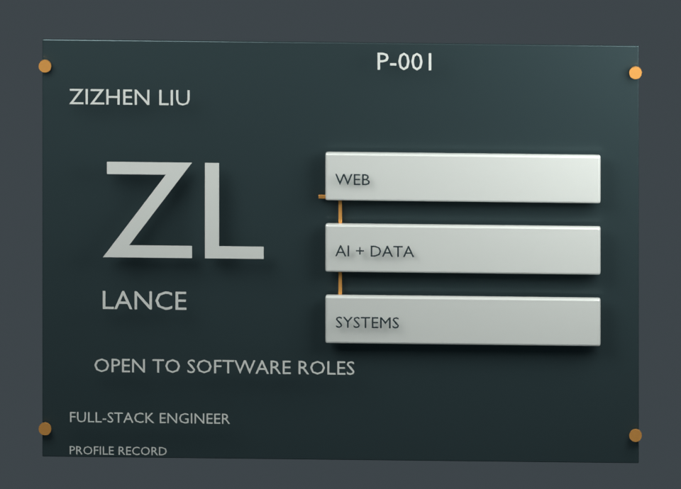
P-001
刘子箴 · 全栈工程师
FULL-STACK ENGINEER
31 份档案全部更新：个人资料与学历、三段实习，以及 Web、AI、系统项目。每款内构依据对应资料制作；点击图片可放大，进入网站可旋转和拆解。原始界面、记录数值与结构示意在“内容与依据”中分别说明。
进入个人网站 →
FULL-STACK ENGINEER
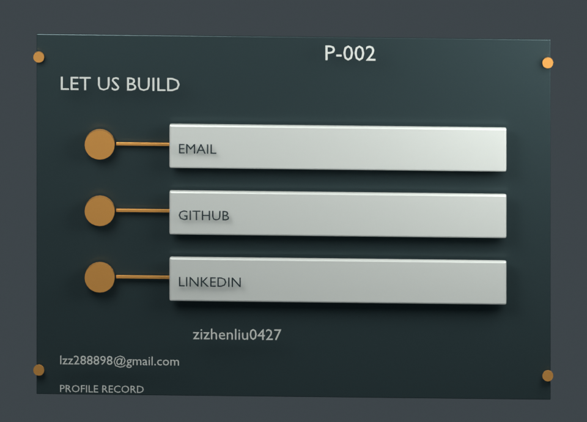
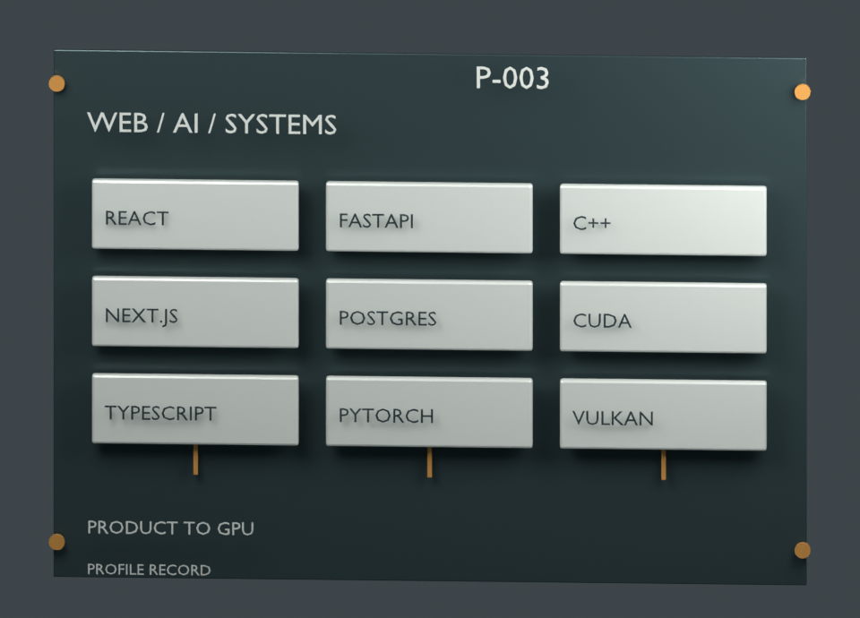
PRODUCT TO GPU
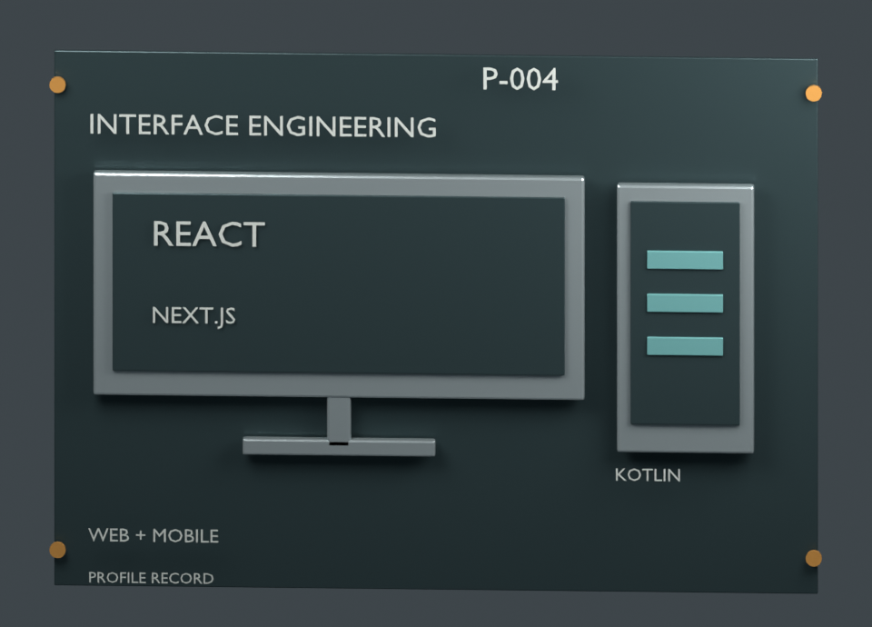
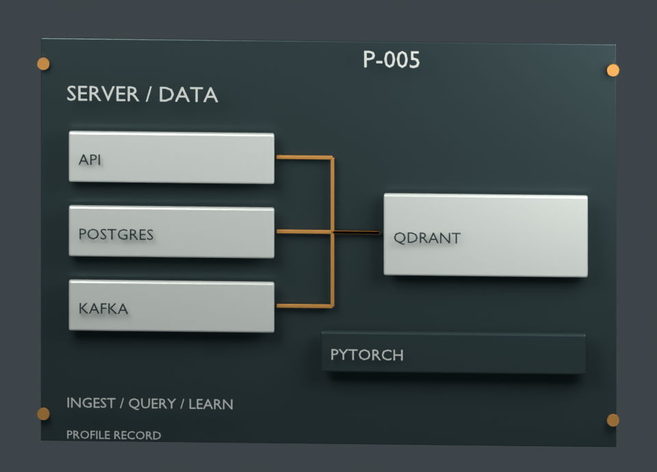
INGEST / QUERY / LEARN
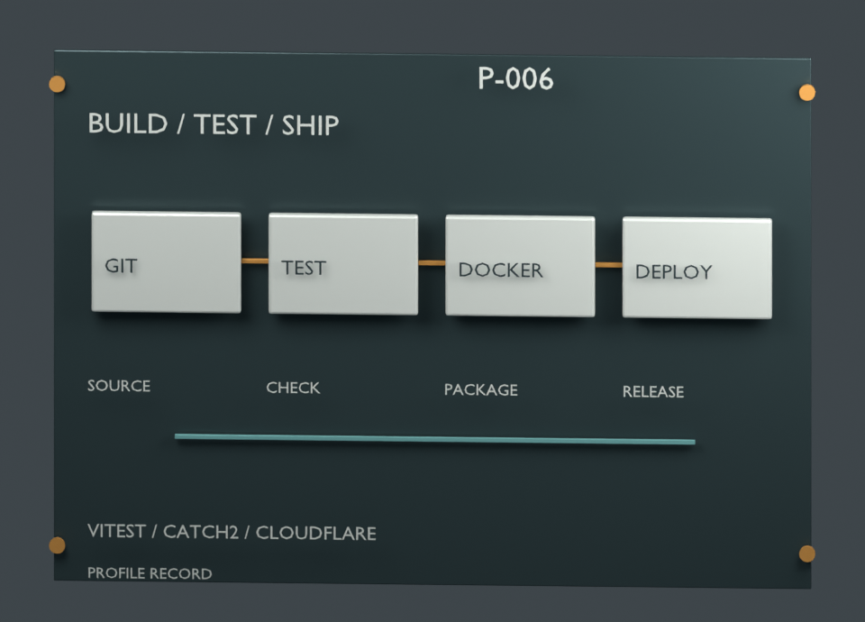
VITEST / CATCH2 / CLOUDFLARE
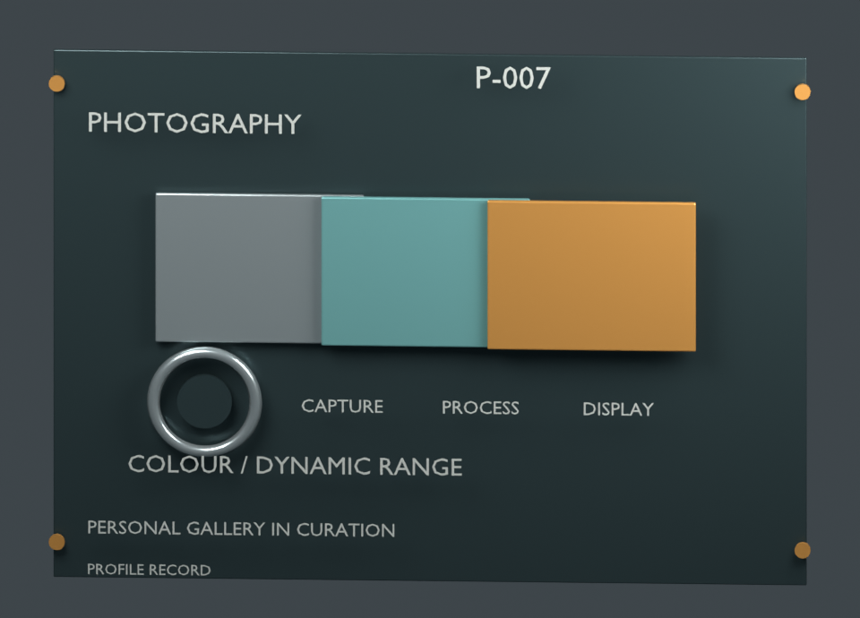
PERSONAL GALLERY IN CURATION
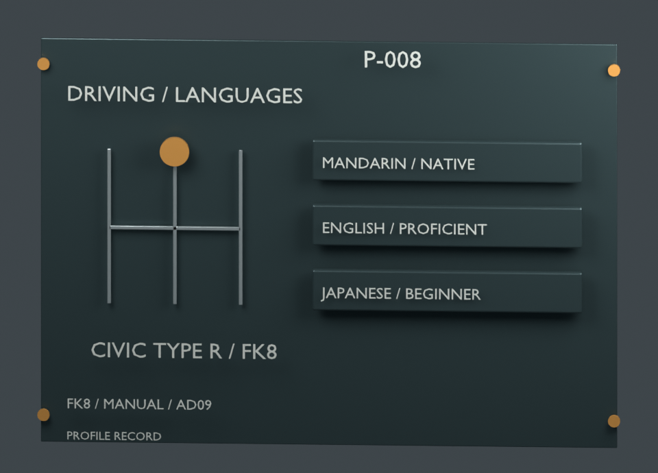
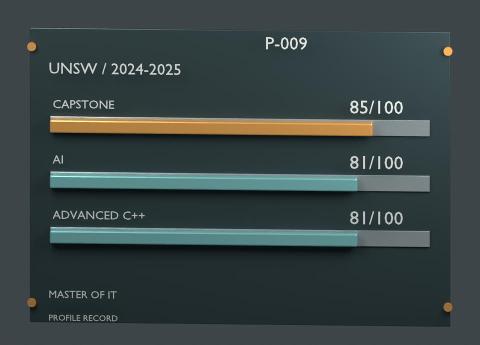
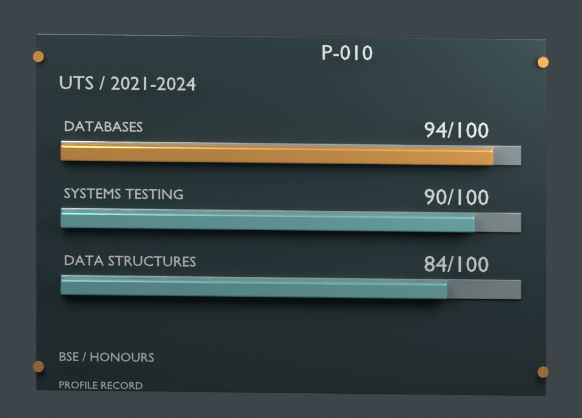
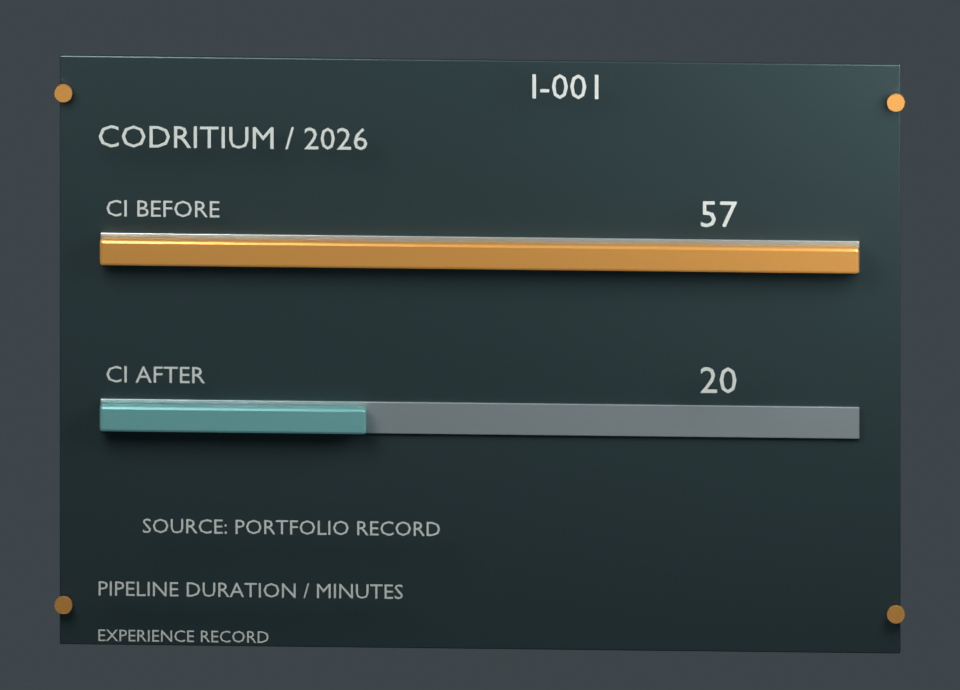
PIPELINE DURATION / MINUTES
开发 Marketing Simplified(MediaJira)——面向媒介采购团队的广告投放管理平台,Next.js/TypeScript 前端搭配 Django REST + Channels 后端。
数值取自现有个人档案；并非本次重新测试。
相关项目 / 机构 ↗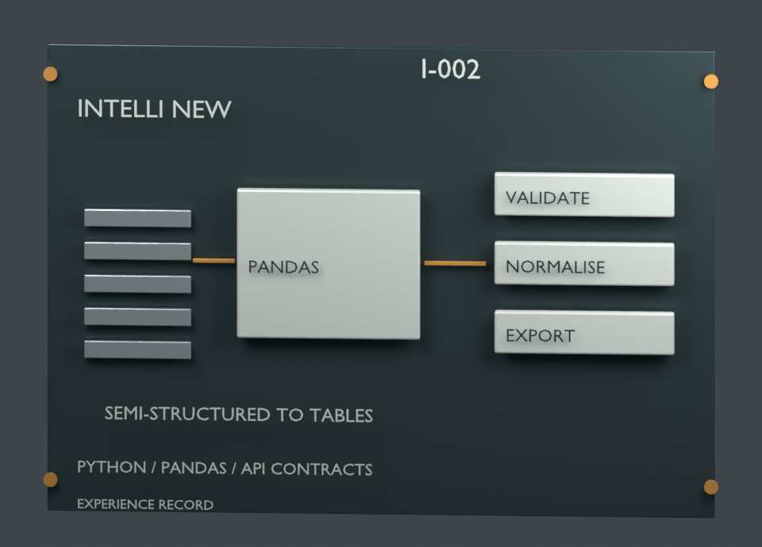
PYTHON / PANDAS / API CONTRACTS
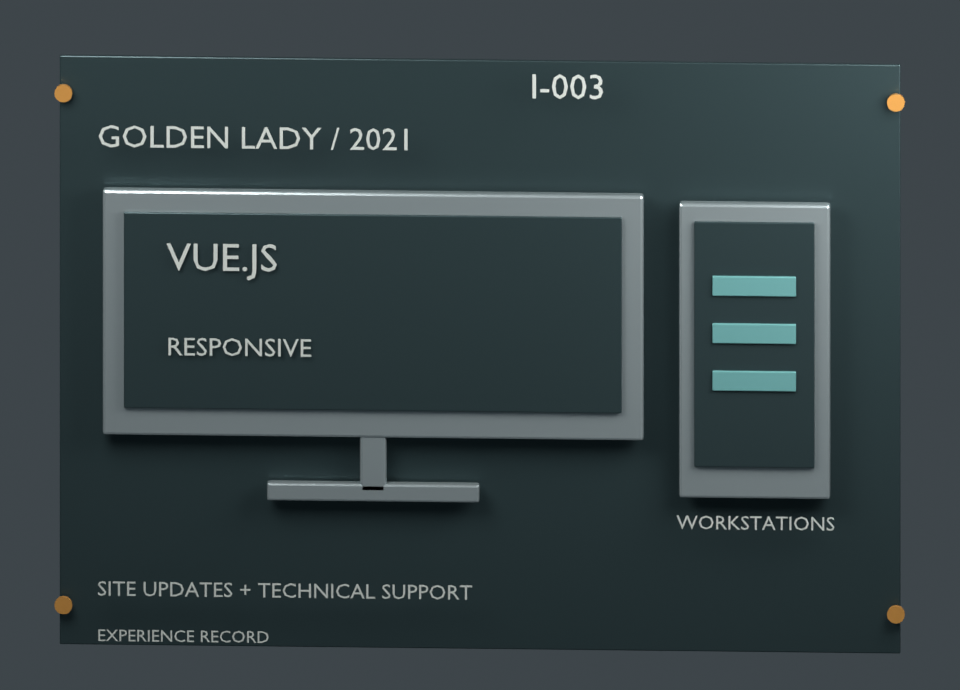
SITE UPDATES + TECHNICAL SUPPORT

29,000+ RECORDS / 6-TABLE JOINS
一个 wiki 式的装备数据库。前台做中英双语路由和 D3 可视化,后台是 Node/Express + Sequelize 的无服务器架构,在 29,000 多条记录上跑最多六表联查。
依据现有档案与项目文档制作的结构示意，不是原始界面截图。
相关项目 / 机构 ↗
NOVACART / USER JOURNEY
端到端搭建的移动优先电商平台。Next.js PWA 店面,底下是 ASP.NET Core + PostgreSQL,接了 Stripe 支付、Redis 缓存、服务端购物车持久化,以及一套可配置的订单状态机。
真实源码页面，使用种子商品与演示订单。
相关项目 / 机构 ↗
WEBSOCKET LATENCY / SECONDS
Codritium 实习期间开发的广告投放管理平台。让实时聊天在 100 人并发下稳定送达,做了多人实时协作表格和 Calendly 式预约链接,完成横跨 12 个模块、涉及 373 个文件的 slug-URL 迁移,并把 CI 从 57 分钟压到 20 分钟。
数值取自现有个人档案；并非本次重新测试。
相关项目 / 机构 ↗
TASK STATES / SOURCE README
全栈看板工具:拖拽式面板、基于 WebSocket 的多人实时协作、项目数据统计。后端 FastAPI + SQLAlchemy,前端 React/TypeScript。
依据现有档案与项目文档制作的结构示意，不是原始界面截图。
相关项目 / 机构 ↗
CONTAINER LIFECYCLE
用 Spring Cloud 微服务重做海运货代的全流程:把集装箱从码头到还空箱的全程可见性自动化,替掉原来靠邮件人工协调的方式,降低滞箱风险。
依据现有档案与项目文档制作的结构示意，不是原始界面截图。
相关项目 / 机构 ↗
WHO IS UNDERCOVER / ROOM FLOW
Kahoot 式的多人派对游戏平台:主持端投屏,玩家用手机加入。Socket.IO 撑起实时房间,Vue 3 + TypeScript 单仓结构,可作为 PWA 安装。
依据现有档案与项目文档制作的结构示意，不是原始界面截图。
相关项目 / 机构 ↗
TEXT + IMAGE / MVVM
为 Good360 Australia 的捐赠 App 做的聊天模块,Kotlin/MVVM:多类型 RecyclerView 消息流、Firebase 实时同步、图片消息,以及可复现的聊天室 ID 生成。
依据现有档案与项目文档制作的结构示意，不是原始界面截图。
相关项目 / 机构 ↗
BROWSER + LEGACY ARCHIVE PATHS
浏览器扩展抓取 HLS 流和站内附件,与本地 Python 服务通信,配网页控制台;FFmpeg 把切片合成可播放的文件。全程在本机完成。
依据现有档案与项目文档制作的结构示意，不是原始界面截图。
相关项目 / 机构 ↗
SENSOR DATA TO CONVERSATION
一个物联网分析平台,楼宇管理者可以直接用自然语言查询实时传感器数据。覆盖 React 前端、FastAPI + Kafka 后端,以及对话背后的 RAG 检索管线。
依据现有档案与项目文档制作的结构示意，不是原始界面截图。
相关项目 / 机构 ↗
83% MACRO F1 / PORTFOLIO RESULT
在类别严重失衡的皮肤镜数据上微调 DenseNet/EfficientNet/ResNet,并手写实现 Squeeze-and-Excitation 注意力模块,macro F1 达到 83%;用 Grad-CAM 验证模型看的是不是该看的区域。
依据现有档案与项目文档制作的结构示意，不是原始界面截图。
相关项目 / 机构 ↗
10,025 FRAMES / 85% mAP50
实时监控平台:YOLOv8 在 10,025 张人工标注的画面上训练,经 Django REST + MJPEG 推流,送到多路摄像头的 React 面板。
依据现有档案与项目文档制作的结构示意，不是原始界面截图。
相关项目 / 机构 ↗
SPEAKER DIARISATION
AI 音视频转写,带说话人分离。以三种形态交付:命令行、网页应用和 Electron 桌面端,前置 FFmpeg 预处理,后接 Whisper 系语音识别模型。
依据现有档案与项目文档制作的结构示意，不是原始界面截图。
相关项目 / 机构 ↗
BT.709 TO HDR10 / GPU PIPELINE
全程驻留 GPU 的视频管线(NVDEC → CUDA → RTX TrueHDR/VSR → NVENC),4K HDR 实时转换稳定在 ~120fps。色彩空间转换 kernel 手写,支持 HDR10 元数据标记,配中英双语命令行。
依据现有档案与项目文档制作的结构示意，不是原始界面截图。
相关项目 / 机构 ↗
GPU / MEASURED THROUGHPUT
C++17 写的五后端基准测试(Vulkan、DX12、DX11、OpenGL、Metal),实测 10 多张 AMD 与 NVIDIA 显卡,覆盖六代 AMD 架构;无窗口计算模式挖出了被渲染路径掩盖的 12 倍吞吐差异。附 2,300 行技术报告。
采用已存档的 Vulkan 测试结果，未重新跑分。
RX 9070 XT / Vulkan / 1M 粒子。窗口模式 1,750.6 次/秒；纯计算 21,259.6 次/秒。计算耗时分别为 0.033 / 0.034 ms。纯计算跳过绘制与呈现，吞吐量比例不代表着色器加速比例。
原测试报告 §5c ↗相关项目 / 机构 ↗
VALUE SEMANTICS / CATCH2

48 kHz / 24-bit / VHDL
在可编程逻辑里用 VHDL 写 I2S 接收器,48kHz/24-bit 音频经 AXI4-Stream + DMA 送进 Linux,配 Device Tree 集成和一级 AXI-Lite 控制的增益/EQ。
依据现有档案与项目文档制作的结构示意，不是原始界面截图。
相关项目 / 机构 ↗
RECHECK / RETAIN / REPLACE
解决海外看 B 站卡顿:探测 CDN 边缘节点,把最快的那个用 DNS 固定下来。带定时复测、阈值保护和候选 IP 刷新,支持 Windows、macOS、OpenWrt 和 AdGuard Home。
依据现有档案与项目文档制作的结构示意，不是原始界面截图。
相关项目 / 机构 ↗
IDENTITY / STORAGE / DEVICES
VMware Workstation 里搭的 Windows Server 2025 + Active Directory 实验环境,一台支持远程访问和 IPv6 的群晖 NAS,外加一些底层折腾:黑苹果 EFI/ACPI 引导、kext 注入,以及安卓第三方 ROM 救砖。
依据现有档案与项目文档制作的结构示意，不是原始界面截图。
相关项目 / 机构 ↗{kind=link}
{kind=link}
{kind=link}
{kind=link}
{kind=link}
{kind=link}
{kind=link}
{kind=link}
{kind=link}
{kind=link}
{kind=link}
{kind=link}
{kind=link}
{kind=link}
{kind=link}